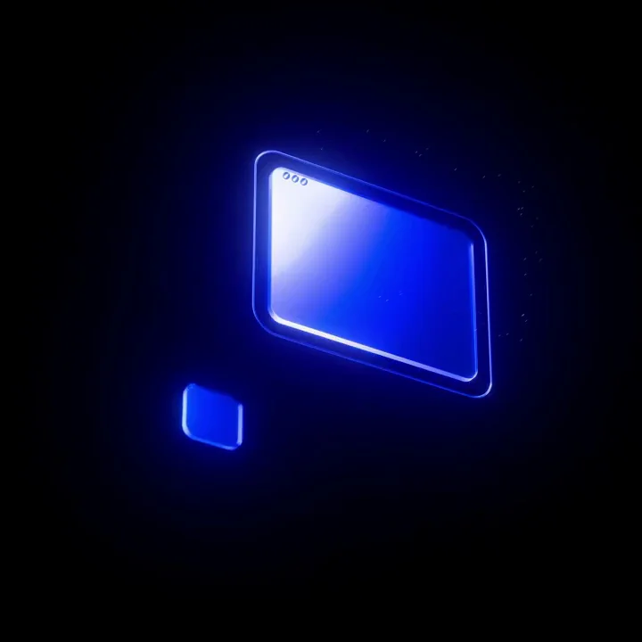
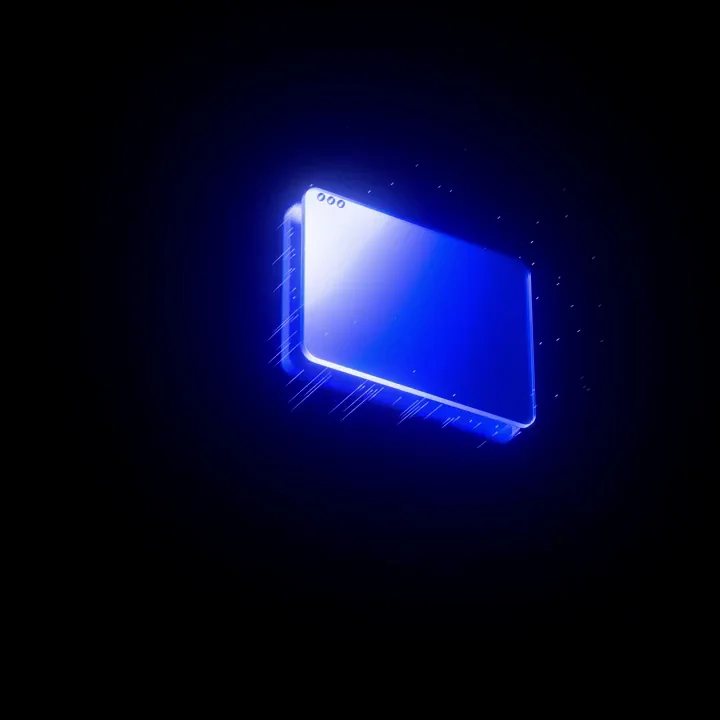
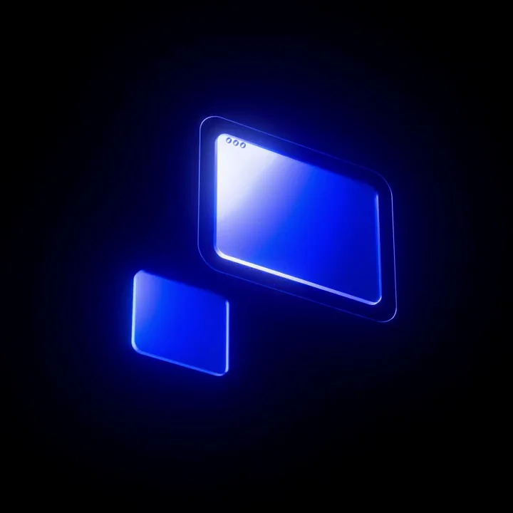

Framer / V153
用 MCP 迁移到 Framer
前窗固定在右上，后窗位于左下。两者保持相同透视方向，后窗收起时先缩为一点，再沿斜轴展开。
构图与编排 可播放 · 可替换内容
整体编排规则示例
查看 HTML 源码
<!doctype html><html lang="zh-CN"><meta charset="utf-8"><meta name="viewport" content="width=device-width,initial-scale=1"><title>用 MCP 迁移到 Framer · sequence</title><style>html,body{margin:0;width:100%;height:100%;overflow:hidden;background:#000000}canvas{display:block;width:100%;height:100%;object-fit:contain}</style><body data-mode="sequence"><canvas width="1000" height="600"></canvas><script src="data.js"></script><script src="common.js"></script><script src="scene.js"></script><script src="bridge.js"></script></body></html>画面元素前景窗口后景窗口蓝色边缘拖尾颗粒
MOTION LANGUAGE
动作与构图
局部动作 · 构图规则
01
两张窗口共用一条斜轴
两张窗口共用一条斜轴规则示例
查看 HTML 源码
<!doctype html><html lang="zh-CN"><meta charset="utf-8"><meta name="viewport" content="width=device-width,initial-scale=1"><title>用 MCP 迁移到 Framer · sequence</title><style>html,body{margin:0;width:100%;height:100%;overflow:hidden;background:#000000}canvas{display:block;width:100%;height:100%;object-fit:contain}</style><body data-mode="clip" data-start="0.5" data-end="2.5"><canvas width="1000" height="600"></canvas><script src="data.js"></script><script src="common.js"></script><script src="scene.js"></script><script src="bridge.js"></script></body></html>前窗固定在右上，后窗位于左下。两者保持相同透视方向，后窗收起时先缩为一点，再沿斜轴展开。
02
发光集中在边缘
纯黑背景上只用电蓝、浅蓝与白色高光。玻璃面半透明，左上边缘最亮，细碎拖尾沿移动方向向外散开。
03
把循环用于迁移或同步
替换窗口内部标志即可表达另一组工具。维持前景主体稳定，避免两个窗口同时大幅移动而失去参照。
SEQUENCE
段落与节奏
点击段落，定位到上方编排示意。



画面参考 · 离散静帧
KEEP THE RELATIONSHIPS
制作其他主题
- 保留双平面与错位伸缩关系，可替换同步或迁移对象。
制作约束
前景窗口 / 后景窗口 / 蓝色边缘 / 拖尾颗粒
- 前窗固定在右上，后窗位于左下。两者保持相同透视方向，后窗收起时先缩为一点，再沿斜轴展开。
- 纯黑背景上只用电蓝、浅蓝与白色高光。玻璃面半透明，左上边缘最亮，细碎拖尾沿移动方向向外散开。
- 替换窗口内部标志即可表达另一组工具。维持前景主体稳定，避免两个窗口同时大幅移动而失去参照。